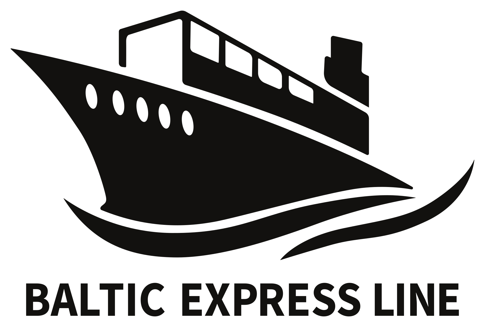

01 · VESSEL LIST
Containers expected
Import the loading list from Lapro.

Find out which containers are on terminal for the vessel.
Updates are checked automatically on startup and every four hours. Download a new version from the banner, then restart to install it. No GitHub account or access token is needed. Container lists stay on your computer.
Import the loading list from Lapro.
Import the list of containers currently on terminal from Matrans portal.
Matches use the container number. Spaces, hyphens and letter case are ignored.
Green: delivered to terminal · Amber: outstanding · Grey: no containernumber · Deep red: blocked on terminal
| Loading-list row | Container number | Size / type | Booking | Status |
|---|